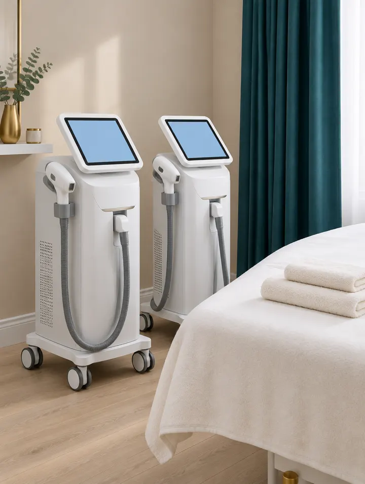
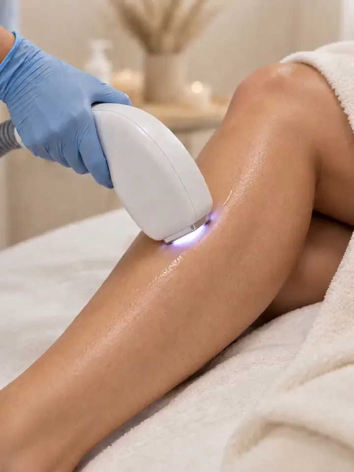
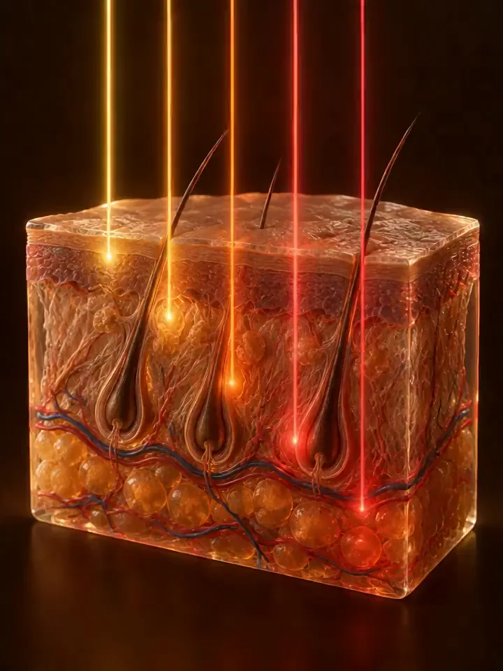

Voghera
Vicolo Rile, 527058 Voghera (PV)
- Martedì – Venerdì9:00 – 19:00
- Sabato9:00 – 14:00
- Domenica e lunedìChiuso
Due tecnologie. Sembrano uguali, ma non lo sono.
Nei nostri istituti puoi scegliere tra ZEUS Pentalaser e Diodo 808. Quale fa per te dipende da fototipo, colore, spessore e caratteristiche del pelo: per questo la scelta parte sempre da una consulenza.


Le due tecnologie
Una singola lunghezza d’onda, 808 nm: particolarmente indicata per il pelo scuro, agisce in modo mirato sul follicolo.
Cinque lunghezze d’onda in un unico impulso, pensate per lavorare a profondità diverse.
Cinque profondità permettono di lavorare su differenti tipologie di pelo, anche su quelli più fini e chiari.
La consulenza
A confronto
| Diodo 808 | ZEUS Pentalaser | |
|---|---|---|
| Lunghezze d’onda | Una: 808 nm | Cinque, in un unico impulso |
| Come lavora | In modo mirato sul follicolo | A diverse profondità |
| Indicato per | Pelo scuro | Diverse tipologie di pelo, anche fini e chiari |
| Si sceglie | In consulenza | In consulenza |

La regola da ricordare
Con la ceretta strappi il pelo dalla sua sede follicolare. Ma il laser ha bisogno del pigmento del pelo come bersaglio per trasferire energia alle strutture follicolari.
Se continui a strappare i peli tra una seduta e l’altra, interferisci con il percorso che stiamo costruendo. Per questo tra le sedute generalmente si usa il rasoio, non metodi che strappano il pelo dalla radice come ceretta o pinzetta.
Hai iniziato un percorso laser? Segui il protocollo. Non improvvisare tra una seduta e l’altra.
Domande frequenti
È la domanda che ci fate più spesso. Con ZEUS Pentalaser la sensazione può essere molto diversa da quella che ti aspetti: chi l’ha appena provato l’ha descritto delicato e confortevole, «quasi un trattamento rilassante». La sensibilità resta personale: ne parliamo in consulenza.
Il Diodo 808 lavora con una singola lunghezza d’onda, 808 nm. ZEUS Pentalaser combina cinque lunghezze d’onda in un unico impulso, pensate per lavorare a diverse profondità.
Dipende da fototipo, colore, spessore e caratteristiche del pelo. Per questo la scelta parte sempre da una consulenza, in cui guardiamo insieme pelle e pelo.
ZEUS Pentalaser lavora su diverse profondità e su differenti tipologie di pelo, anche su peli più fini e chiari. Se è adatto al tuo caso te lo diciamo in consulenza, dopo aver visto pelle e pelo.
No. Il laser usa il pigmento del pelo come bersaglio: se lo strappi con ceretta o pinzetta interferisci con il percorso. Tra le sedute generalmente si usa il rasoio.
ZEUS Pentalaser è arrivato nei nostri istituti. Chiama la sede più comoda, Voghera o Stradella, per fissare la consulenza.
Due istituti in Oltrepò
Chiama l’istituto più comodo e chiedi una consulenza NER. Prima di proporti qualcosa vogliamo sapere cosa hai provato e cosa desideri ottenere.
Preferisci scrivere? Mandaci un messaggio in direct su Instagram @jalila.ilbellessere.
Cellulare 349 112 4782
Indicazioni su Google MapsVoghera328 236 9899WhatsApp
Stradella0385 782980WhatsApp